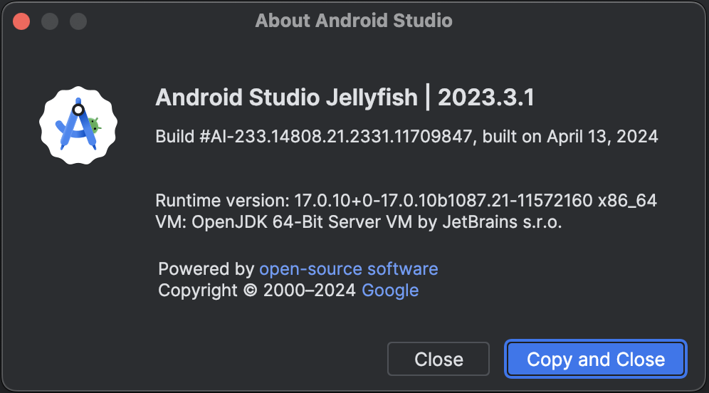

Build sherpa-onnx for Android
You can use this section for both speech-to-text (STT, ASR)
and text-to-speech (TTS).
Hint
The build scripts mentioned in this section run on both Linux and macOS.
If you are using Windows or if you don’t want to build the shared libraries, you can download pre-built shared libraries by visiting the release page https://github.com/k2-fsa/sherpa-onnx/releases/
For instance, for the relase v1.12.13, you can visit
https://github.com/k2-fsa/sherpa-onnx/releases/tag/v1.12.13
and download the file sherpa-onnx-v1.12.13-android.tar.bz2
using the following command:
wget https://github.com/k2-fsa/sherpa-onnx/releases/download/v1.12.13/sherpa-onnx-v1.12.13-android.tar.bz2
Please always use the latest release.
If you use RK NPU for Android, please use instead sherpa-onnx-v1.12.13-android-rknn.tar.bz2.
Hint
This section is originally written for speech-to-text. However, it is also applicable to other folders in https://github.com/k2-fsa/sherpa-onnx/tree/master/android.
For instance, you can replace SherpaOnnx in this section with
SherpaOnnx2Pass
SherpaOnnxTts(this is for text-to-speech)
SherpaOnnxTtsEngine(this is for text-to-speech)
SherpaOnnxVad
SherpaOnnxVadAsr
SherpaOnnxSpeakerIdentification
SherpaOnnxSpeakerDiarization
SherpaOnnxAudioTagging
SherpaOnnxAudioTaggingWearOs
Install Android Studio
The first step is to download and install Android Studio.
Please refer to https://developer.android.com/studio for how to install Android Studio.
Hint
Any recent version of Android Studio should work fine. Also, you can use the default settings of Android Studio during installation.
For reference, we post the version we are using below:
{kind=link}
Download sherpa-onnx
Next, download the source code of sherpa-onnx:
git clone https://github.com/k2-fsa/sherpa-onnx
Install NDK
Step 1, start Android Studio.
{kind=link}
Step 2, Open sherpa-onnx/android/SherpaOnnx.
{kind=link}
Step 3, Select Tools -> SDK Manager.
{kind=link}
Step 4, Install NDK.
{kind=link}
In the following, we assume Android SDK location was set to
/Users/fangjun/software/my-android. You can change it accordingly below.
After installing NDK, you can find it in
/Users/fangjun/software/my-android/ndk/22.1.7171670
Warning
If you selected a different version of NDK, please replace 22.1.7171670
accordingly.
Next, let us set the environment variable ANDROID_NDK for later use.
export ANDROID_NDK=/Users/fangjun/software/my-android/ndk/22.1.7171670
Note
Note from https://github.com/Tencent/ncnn/wiki/how-to-build#build-for-android
(Important) remove the hardcoded debug flag in Android NDK to fix the android-ndk issue: https://github.com/android/ndk/issues/243
1. open $ANDROID_NDK/build/cmake/android.toolchain.cmake for ndk < r23
or $ANDROID_NDK/build/cmake/android-legacy.toolchain.cmake for ndk >= r23
delete the line containing “-g”
list(APPEND ANDROID_COMPILER_FLAGS -g -DANDROID
Build sherpa-onnx (C++ code)
After installing NDK, it is time to build the C++ code of sherpa-onnx.
In the following, we show how to build sherpa-onnx for the following Android ABIs:
arm64-v8a
armv7-eabi
x86_64
x86
Caution
You only need to select one and only one ABI. arm64-v8a is probably the
most common one.
If you want to test the app on an emulator, you probably need x86_64.
Hint
Building scripts for this section are for macOS and Linux. If you are using Windows or if you don’t want to build the shared libraries by yourself, you can download pre-compiled shared libraries for this section by visiting
Hint
We provide a colab notebook
 for you to try this section step by step.
for you to try this section step by step.
If you are using Windows or you don’t want to setup your local environment to build the C++ libraries, please use the above colab notebook.
Build for arm64-v8a
cd sherpa-onnx # Go to the root repo
./build-android-arm64-v8a.sh
After building, you will find the following shared libraries:
ls -lh build-android-arm64-v8a/install/lib/
-rw-r--r-- 1 fangjun staff 15M Jul 28 12:54 libonnxruntime.so
-rwxr-xr-x 1 fangjun staff 3.7M Jul 28 12:54 libsherpa-onnx-jni.so
Please copy them to android/SherpaOnnx/app/src/main/jniLibs/arm64-v8a/:
cp build-android-arm64-v8a/install/lib/lib*.so android/SherpaOnnx/app/src/main/jniLibs/arm64-v8a/
You should see the following screen shot after running the above copy cp command.
{kind=link}
Build for armv7-eabi
cd sherpa-onnx # Go to the root repo
./build-android-armv7-eabi.sh
After building, you will find the following shared libraries:
ls -lh build-android-armv7-eabi/install/lib
-rw-r--r-- 1 fangjun staff 10M Jul 28 13:18 libonnxruntime.so
-rwxr-xr-x 1 fangjun staff 2.1M Jul 28 13:18 libsherpa-onnx-jni.so
Please copy them to android/SherpaOnnx/app/src/main/jniLibs/armeabi-v7a:
cp build-android-armv7-eabi/install/lib/lib*.so android/SherpaOnnx/app/src/main/jniLibs/armeabi-v7a/
You should see the following screen shot after running the above copy cp command.
{kind=link}
Build for x86_64
cd sherpa-onnx # Go to the root repo
./build-android-x86-64.sh
After building, you will find the following shared libraries:
ls -lh build-android-x86-64/install/lib/
-rw-r--r-- 1 fangjun staff 17M Jul 28 13:26 libonnxruntime.so
-rwxr-xr-x 1 fangjun staff 4.0M Jul 28 13:26 libsherpa-onnx-jni.so
Please copy them to android/SherpaOnnx/app/src/main/jniLibs/x86_64/:
cp build-android-x86-64/install/lib/lib*.so android/SherpaOnnx/app/src/main/jniLibs/x86_64/
You should see the following screen shot after running the above copy cp command.
{kind=link}
Build for x86
cd sherpa-onnx # Go to the root repo
./build-android-x86.sh
After building, you will find the following shared libraries:
ls -lh build-android-x86/install/lib/
-rw-r--r-- 1 fangjun staff 17M Jul 28 13:28 libonnxruntime.so
-rwxr-xr-x 1 fangjun staff 3.9M Jul 28 13:28 libsherpa-onnx-jni.so
Please copy them to android/SherpaOnnx/app/src/main/jniLibs/x86/:
cp build-android-x86/install/lib/lib*.so android/SherpaOnnx/app/src/main/jniLibs/x86/
You should see the following screen shot after running the above copy cp command.
{kind=link}
Download pre-trained models
Please read Pre-trained models for all available pre-trained models.
In the following, we use a pre-trained model csukuangfj/sherpa-onnx-streaming-zipformer-bilingual-zh-en-2023-02-20 (Bilingual, Chinese + English), which supports both Chinese and English.
Hint
The model is trained using icefall and the original torchscript model is from https://huggingface.co/pfluo/k2fsa-zipformer-chinese-english-mixed.
Use the following command to download the pre-trained model and place it into
android/SherpaOnnx/app/src/main/assets/:
cd android/SherpaOnnx/app/src/main/assets/
wget https://github.com/k2-fsa/sherpa-onnx/releases/download/asr-models/sherpa-onnx-streaming-zipformer-bilingual-zh-en-2023-02-20.tar.bz2
tar xvf sherpa-onnx-streaming-zipformer-bilingual-zh-en-2023-02-20.tar.bz2
rm sherpa-onnx-streaming-zipformer-bilingual-zh-en-2023-02-20.tar.bz2
cd sherpa-onnx-streaming-zipformer-bilingual-zh-en-2023-02-20
# Now, remove extra files to reduce the file size of the generated apk
rm -rf test_wavs
rm -f *.sh README.md
rm -f bpe.model
rm -f encoder-epoch-99-avg-1.int8.onnx
rm -f joiner-epoch-99-avg-1.int8.onnx
rm -f decoder-epoch-99-avg-1.int8.onnx
rm -f bpe.vocab
In the end, you should have the following files:
ls -lh
-rw-r--r--@ 1 fangjun staff 13M Jul 28 13:51 decoder-epoch-99-avg-1.onnx
-rw-r--r--@ 1 fangjun staff 315M Jul 28 13:51 encoder-epoch-99-avg-1.onnx
-rw-r--r--@ 1 fangjun staff 12M Jul 28 13:51 joiner-epoch-99-avg-1.onnx
-rw-r--r--@ 1 fangjun staff 55K Nov 21 2023 tokens.txt
You should see the following screen shot after downloading the pre-trained model:
{kind=link}
Hint
If you select a different pre-trained model, make sure that you also change the corresponding code listed in the following screen shot:
{kind=link}
Generate APK
Finally, it is time to build sherpa-onnx to generate an APK package.
Select Build -> Make Project, as shown in the following screen shot.
{kind=link}
You can find the generated APK in android/SherpaOnnx/app/build/outputs/apk/debug/app-debug.apk:
ls -lh android/SherpaOnnx/app/build/outputs/apk/debug/app-debug.apk
-rw-r--r--@ 1 fangjun staff 329M Jul 28 13:56 android/SherpaOnnx/app/build/outputs/apk/debug/app-debug.apk
Congratulations! You have successfully built an APK for Android.
Read below to learn more.
Analyze the APK
{kind=link}
Select Build -> Analyze APK ... in the above screen shot, in the
popped-up dialog select the generated APK app-debug.apk,
and you will see the following screen shot:
{kind=link}
You can see from the above screen shot that most part of the APK
is occupied by the pre-trained model, while the runtime, including the shared
libraries, is only 7.2 MB.
Caution
You can see that libonnxruntime.so alone occupies 5.8MB out of 7.2MB.
We use a so-called Full build instead of Mobile build, so the file
size of the library is somewhat a bit larger.
libonnxruntime.so is donwloaded from
Please refer to https://onnxruntime.ai/docs/build/custom.html for a
custom build to reduce the file size of libonnxruntime.so.
Note that we are constantly updating the version of onnxruntime. By
the time you are reading this section, we may be using the latest version
of onnxruntime.
Hint
We recommend you to use sherpa-ncnn. Please see
Analyze the APK for sherpa-ncnn. The total runtime of
sherpa-ncnn is only 1.6 MB, which is much smaller than sherpa-onnx.